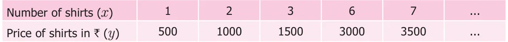
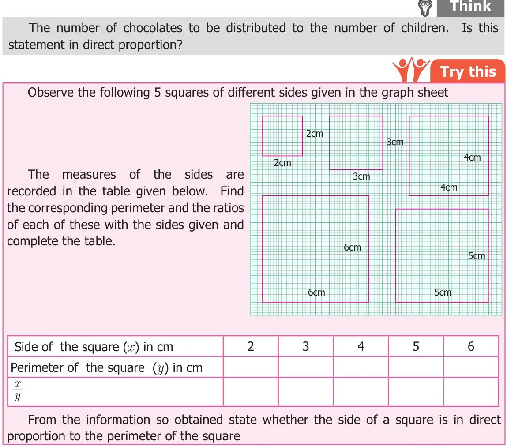
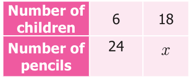
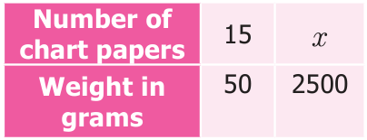
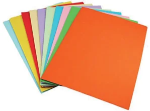

For example, if the cost of a shirt is ₹500, then the price of 3 shirts will be ₹1,500. The price of the shirts increases as the number of shirts increases. Proceeding the same way we can find the cost of any number of such shirts. When observing the above situation, two quantities namely the number of shirts and their prices are related to each other. When the number of shirts increases, the price also increases in such a way that their ratio remains constant. Let us denote the number of shirts as x and the price of shirts as y rupees. Now observe the following table

From the table, we can observe that when the values of x increases the corresponding values of y also increases in such way that the ratio \(\frac{x}{y}\) in each case has the same value
which is a constant (say k). Now let us find the ratio for each of the value from the table. \(x = 1 = 2 = 3 = 6 = 7\) and so on. All the ratios are equivalent and its y 500 1000 1500 3000 3500 simplified form is \(\frac{1}{500}\) . In general, \(\frac{x1}{y500} = = k\) (k is a constant) When x and y are in direct proportion, we get \(\frac{x}{y} = k\) or \(x =\) ky (k is a constant) Considering any two ratios given above, say, = , where 2(x ) and 6 (x ) are
\(\frac{26}{10003000}\)
the number of shirts (x) and 1000 (y ) and 3000 (y ) are their prices (y). So, when x and y are in direct proportion we can write = [where, y , y are values of y corresponding
\(\frac{x1x2}{yy}\)
to the values x , x of x].

Think
When a fixed amount is deposited for a fixed rate of interest, the simple interest changes propotionaly with the number of years it is being deposited. Can you find any other examples of such kind.
Example 4.1
If 6 children shared 24 pencils equally, then how many pencils are required for 18 children?
Solution
Let x be the number of pencils required for 18 children. As the number of children increases, number of pencils also increases. In the case of direct proportion we take \(\frac{x1}{y}= \frac{x2}{y}\)
\(\frac{6}{24} = \frac{18}{x} \frac{6 \times x}{24} = 18 x = \frac{18 \times 24}{6} =72\)

Hence, 72 pencils are required for 18 children.
Example 4.2
If 15 chart papers together weigh 50 grams, how many of the same type will be there in a pack of \(2 \frac{1}{2}\) kilogram?
Solution
Let x be the required number of charts.

As weight increases, the number of charts also increases. So the quantities are in direct proportion. Hence \(\frac{x1}{y}= \frac{x2}{y}\)

\(\frac{15}{50} = \frac{x}{2500}\)
\(15 \times 2500 = x \times 50 x \times 50 = 15 \times 2500 x = \frac{15 \times 2500}{50} = 750\)
Therefore, 750 charts will weigh \(2 \frac{1}{2}\) kilogram.
Unitary Method
We know the concept of unitary method studied in the previous class. First, the value of one unit will be found. It will be useful to find the value of the required number of units. We will try to solve more problems using unitary method.
Example 4.3
Anbu bought 2 notebooks for ₹24. How much money will be needed to buy 9 such notebooks? Solution Using unitary method we can solve this as follows: The cost of 2 notebooks = ₹24 The cost of 1 notebook \(= \frac{24}{2} =\) ₹12 Therefore, the cost of 9 notebooks \(= 9 \times\) ₹12
= ₹108
Hence, Anbu has to pay ₹108 for 9 notebooks.
Example 4.4
A car travels 90km in 2hours 30minutes. How much time is required to cover 210km? Solution Time taken to cover 90 km = 2hrs 30mins

\(= 150\) minutes
Time taken to cover 1 km \(= \frac{150}{90}\) minutes. Time taken to cover 210 km \(= \frac{150}{90} \times\) 210minutes
\(= 350\) minutes
Thus, the time taken to travel 210 km is 5 hours 50 minutes
- Fill in the blanks
- If the cost of 8 apples is ₹56 then the cost of 12 apples is ________.
- If the weight of one fruit box is \(3 \frac{1}{2}\) kg, then the weight of 6 such boxes is ______.
- A car travels 60 km with 3 liters of petrol. If the car has to cover the distance of 200 km, it requires _______ liters of petrol.
- If the cost of 7 m cloth is ₹294, then the cost of 5 m of cloth is ______.
- If a machine in a cool drinks factory fills 600 bottles in 5 hrs, then it will fill ______ bottles in 3 hours.
- Say True or False
- Distance travelled by a bus and time taken are in direct proportion.
- Expenditure of a family to number of members of the family are in direct proportion.
- Number of students in a hostel and consumption of food are not in direct
proportion.